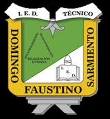

institucional
Clasificador inteligente
de objetos
Entrena un modelo con Teachable Machine, reconoce objetos con fotografías o cámara en vivo y comprueba los resultados mediante Arduino Uno R3.
Sigue las etapas del laboratorio. Puedes probar la clasificación sin Arduino; para encender los LED necesitas conectar la placa desde un navegador compatible.
01Conectar Arduino
Conecta el Arduino por USB. Carga primero el programa Arduino incluido. Cierra el monitor serial antes de conectar.
02Cargar modelo de Teachable Machine
03Configurar el resultado
Si el resultado supera el umbral y pertenece a la categoría válida, se enciende el verde. Si supera el umbral y corresponde a otra categoría, se enciende el rojo. Si no supera el umbral, ambos se apagan.
04Reconocer objetos
Clasificación de fotografía
Reconocimiento continuo
La cámara funciona en Chrome/Edge o Safari desde HTTPS, con permiso del usuario. El Arduino por USB solo funciona donde el navegador admita Web Serial.